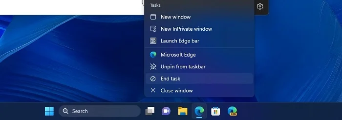

Windows 11: Barra de Tarefas terá atalho para encerrar programas
Chega de Ctrl+Alt+Del, a Microsoft fará alterações no Windows 11 para permitir que encerre programas e atividades em segundo plano em poucos botões
Por Diego Corumba
A Microsoft revelou que a próxima grande atualização do Windows 11 virá com a Build 25300, qual inclusive já está disponível para os insiders. O update do sistema operacional trará algumas novidades para os seus usuários, como a chegada de um atalho disponibilizado na Barra de Tarefas que permite que você possa finalizar as atividades de um programa e processos abertos por ele.
Em termos mais simples, lembra a época que todos precisávamos apertar Ctrl+Alt+Del para liberar o menu que encerrava aquele programa que travou e não queria fazer nada de forma alguma? Isso vai acabar de uma vez por todas. Apesar de tentarem facilitar com o passar dos anos e hoje ser apenas o clicar do botão direito na Barra de tarefas para abrir o Gerenciador, até isso será simplificado.
A intenção também é permitir que o público possa decidir quais processos rodarão em segundo plano, não sobrecarregando as atividades de seu computador. A build permitirá que clique com o botão direito em cima do programa que está em atividade (seja em primeiro ou segundo plano) e clicar na opção "Encerrar Tarefas". Assim, ele fechará o que estiver realizando e você não terá mais dor de cabeça.
Legendas também serão aprimoradas no Windows 11
Quando foi anunciado o Windows 11, a Microsoft deu um grande destaque para o sistema de legendas que existe dentro do sistema. Não o usamos porque apenas a língua inglesa está disponível, mas isso também está prestes a mudar. O português (Brasil) será adicionado também na Build 25300, assim como o chinês (simplificado e tradicional), francês, alemão, japonês, italiano e espanhol.
O programa auxilia pessoas com problemas auditivos a acompanhar vídeos com mais facilidade, quando o próprio reprodutor ou plataforma não carrega uma opção própria. Buscando aumentar a acessibilidade, o recurso chegou ainda em 2022 e desde então carecia de inclusão a outras linguagens. Caso não saiba como utilizá-lo, a Microsoft tem o passo-a-passo diretamente em seu website oficial.
Voltar para a página de notícias